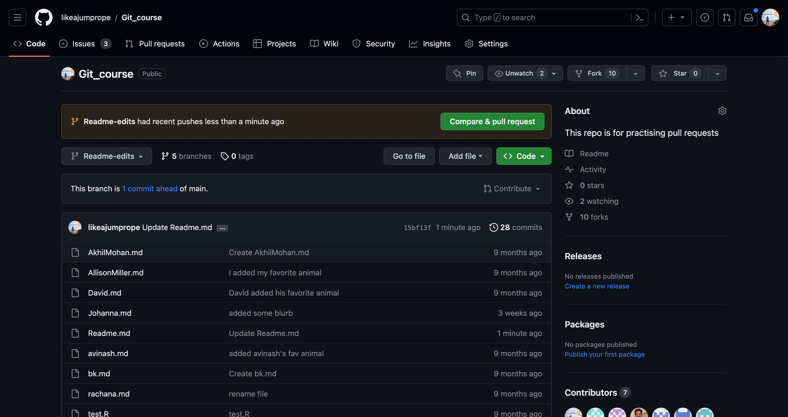
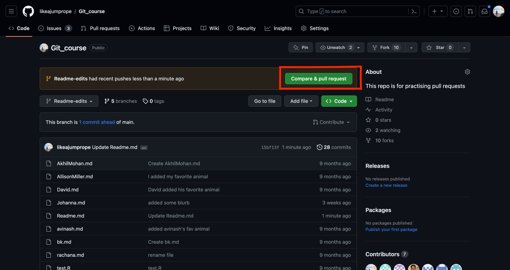

Branching
Branching
Branching is the way to work on different parts and versions of a repository at one time. By default each repository is created with a main branch. You can commit directly into the main branch as we just did.
However, branches are identical copies of the main branch (or any branch you want to copy from), that allow you to implement and test changes before committing them into the main branch (your production branch).
Version control
Let’s play with our newly created repository.
Challenge: create a branch from your main repository
1. Go to your new repository and click the drop down at the top of the file list that says branch: main
The default branch used to be called master branch; due to historic connotations of the word master and as part of a step towards more inclusive langauge the default branch has been renamed to main for new repositories. Older repositories still might have a master branch.
Create a branch Readme-edits. This branch will be a copy of your main branch.

Switch to your new branch.
Click the edit button of the Readme.md file. Add a line to the Readme.md file.
Commit your changes. In this case I have removed a line.

You should now see that your branch has recent edits.

Switch back to the main branch. You should see that the Readme.md file is in the state it was before branching.
Switch back to the Readme-edits branch.
Branches are a good way to test edits to your repository and see whether you like them. Let’s say you are happy with your edits. It’s now time to update your main branch with your edits!
Opening a pull request (PR)
1 Click on the create a pull request button:

Open a pull request. Git will show you what branch will be merged into which when creating the pull requests. You can change this (hence you can decide what to merge into what) - but for now let’s keep the merge direction from Readme.edits -> main.

Write a message for your pull request and click the create pull request button.
Because you are the owner of this repository, you can also accept the pull request. Click the merge pull request button.

5 Congratulations! You have merged your first pull request!

About pull requests
You were able to merge this pull request right away because you are the owner of the repository - you made a PR to your own repository. This is not always the case - usually you want to add changes to a repository that you do not own (for example an open source project you want to contribute to). You won’t be able to merge the PR yourself then, but you will have to wait for the owner of your repository to accept your PR.
Why is it called pull request?
The pull request is a request to have your changes pulled into the target branch. The action while doing this is called pushing, so you push the changes to the target directory and request the owner of the target repository to pull them in.